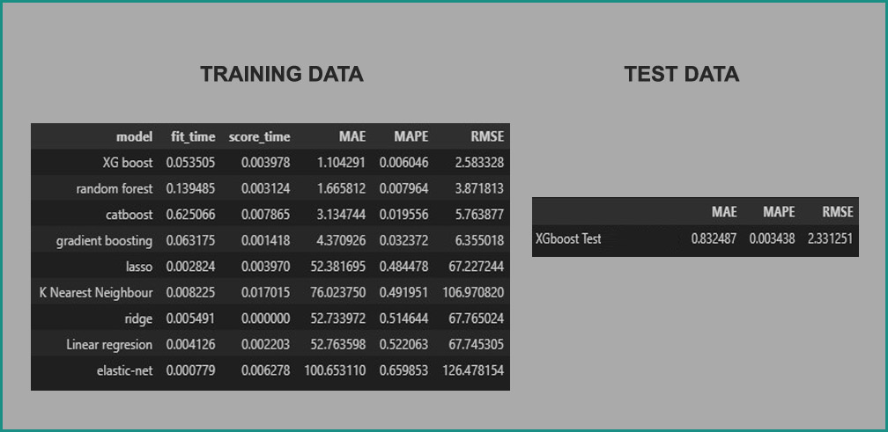
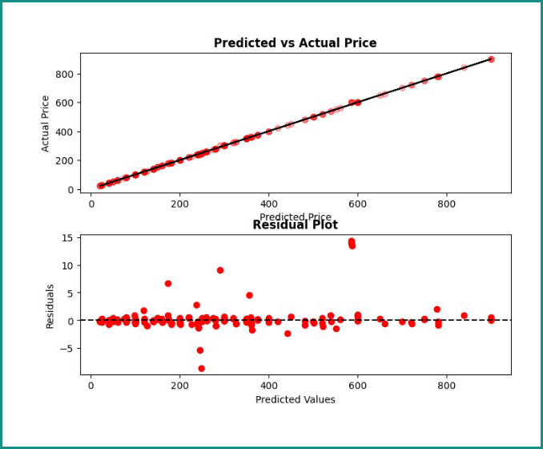
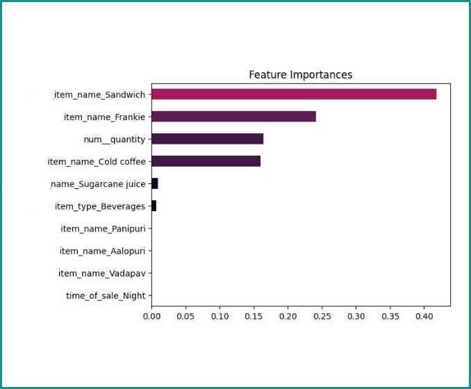
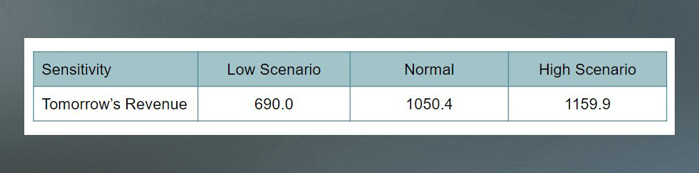

Regression Machine Learning
Restaurant Analysis and Forecasting
Case Study:
A cafe established in 2021 has been operating for three years, selling a variety of food and beverages. The available data includes date and time of sale (afternoon to midnight), product type and price, quantity sold and revenue, as well as customer gender and payment method (cash or cashless).
Task/Challenge:
The cafe owner seeks a data scientist to: 1. Determine customer characteristics. 2. Analyze the business trend over the past 12 months. 3. Identify the most influential food and drink items on earnings. 4. Predict the following day's revenue.
To address these challenges, an exploratory data analysis (EDA) will be conducted to understand customer characteristics and visualize the cafe's performance over the past year. A regression machine learning model with feature importance analysis will be used to determine the most influential food and drink items. Finally, the regression model's output will serve as the basis for forecasting the next day's revenue.
Action and Method for Task 1 and 2:
(Hover right or left arrow)
Based on Figure 1, gender distribution is relatively balanced, with a slight male majority (51.2%) compared to females (48.8%). Customers exhibit a stronger preference for food (68.6%) over beverages, while payment methods (cash and cashless) are evenly distributed.
Figure 2 indicates no significant variation in customer traffic across different times of day. However, the combined evening, night, and midnight period accounts for 60% of total visits.
Figures 3 and 4 reveal similar food type preferences across different times of day and genders. Figure 5 highlights cold coffee as the best-selling beverage (161 units), followed by sugarcane juice (153 units). Panipuri is the most popular food item with 150 units sold.
The 12-month trend in Figure 6 shows peak revenue in June 2022 at 31,220 units and the lowest revenue in July and December 2022, both below 15,000 units. Encouragingly, the latest month, March 2023 has seen a revenue increase to 27,245 units.
Result for Task 1 and 2:
Regarding task 1, customer characteristics indicate a preference for food over beverages. However, there are no significant differences in terms of gender, time of day, or payment method.
For task 2, the latest month (March 2023) shows a revenue surge. Nevertheless, it's crucial to note that the cafe's revenue trend lacks stability.
Action and Method for Task 3 and 4:
To address tasks 3 and 4, a regression machine learning model was employed to predict transaction amount, or in another word is revenue. We using train test split and using transformer and also building cross-metrics and different alghoritms.
After comparing multiple metrics and algorithms, XGBoost emerged as the optimal model due to its lower MAPE and RMSE values. The model demonstrated good generalization as the test results closely aligned with the training results. To add another evidence that model is suitable, we can see the lineplot below.
From actual and predicted plot, the scatter(small circles) plot mostly follow the diagonal line and there is a little gap between those, indicate the model is not underfit or overfit. And from residual plot, we see the model are scattered abstractly, or there is no pattern here. Indicates a little bias on the model itself.
Result for Task 3 and 4:
Thus, we can proceed to answer challenge 3 and 4.
Regarding task 3, feature importance analysis revealed that item-specific factors, particularly sandwiches and frankies, have the most substantial impact on cafe revenue. For beverages, cold coffee is the primary driver of sales-revenue.
For task 4, forecasting the next day's revenue involves applying the developed model. Let say, for tomorrow night cafe owner want to sell (e.g., 10 Aalopuri, 5 Frankie, 15 Cold beverages), a sensitivity analysis was conducted to create three scenarios: low (70% of planned), normal, and high (130% of planned). The model predicted the following revenues for each scenario:
